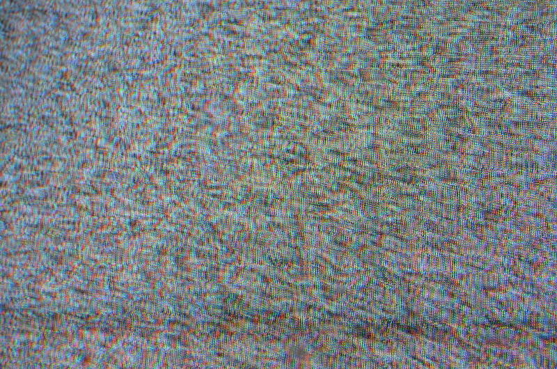
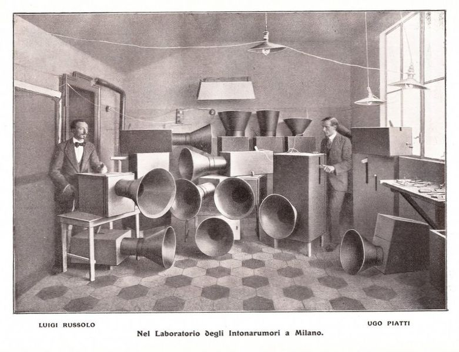
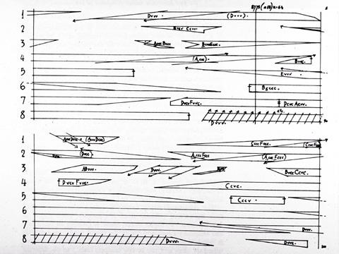
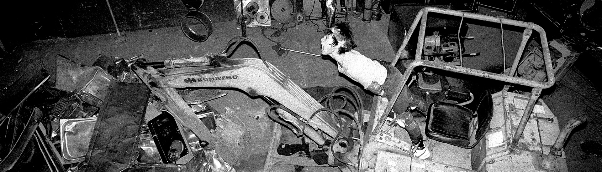
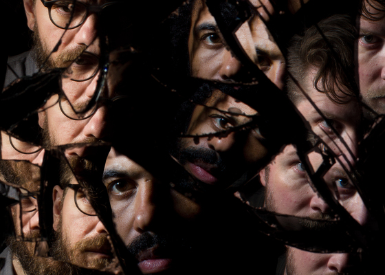

A Condensed History Of Noise Music
Written By: Jaeden Fuller | October 1st, 2021
Crisp, J (2012) Static [CC 2.0] flickr
Like it or hate it, noise music is one of the most interesting musical genres to date, some may say it's not even music, where others would defend it with their life. Ever wonder how we got from vocal music and classical all the way to noise? Well, in this article we will discuss the condensed history of the genre: the early years, Japanese noise, European noise, the spread of noise and modern noise.
“Noise music takes everything that we think we like about music and flips it on its head, creating some totally inaccessible and un-listenable sounds. So, why does it exist? And why are so many people obsessed with it?” - Jonathan Snipes
Early Years
Whilst it's nearly impossible to pinpoint who started the genre, Italian painter Luigi Russolo is considered among one of the first. His article in 1913, titled The Art of Noise, theorized that in an age of machinery, industrial noises would seep into all of our music. At the time there were no instruments that could fulfill his artistic vision so, in the following year, Russolo developed instruments he called the Intonarumori. The Intonarumori could create the following sounds and more:
- Roars
- Explosions
- Whistles
- Creaking
- Screeching
The Intonarumori

(1913) Intonarumori [Public Domain] Wikimedia Commons
{kind=link}
Russolo’s inventions were premiered in futurist concerts, an early 20th-century modern art movement. He continued to develop his instruments until they were all destroyed in the Paris bombings of World War II. Luckily, in 2009, composer Luciano Chessa was able to recreate the instruments and, in a sense, preserve the musical history that had been previously lost for nearly a century.
You could also look to avant-garde composer John Cage who began to experiment with unusual compositions and instruments in the late 1930s and had a much larger influence on the experimental music landscape, with multiple experimental artists directly citing him as an influence.
His dive into the unorthodox began with his modified piano, where he put objects on the piano's string to create percussive sounds. He also delved into the realm of tape recorders, record players and radio. Using these devices, he began to include nonmusical sounds in his works, going as far as composing for the tape recorder.
John Cage Composition For Tape Recorder

Cage, J (1952) Williams Mix Media Art Net
All of this led to him creating the concept of indeterminism which he used in his compositions. Indeterminism meant that there was a level of randomness in his work. He accomplished that by using:
- Unspecified instruments
- Unspecified amount of performers
- Unspecified duration of notes
- Inexact notation
- Improvisation from players
This concept inspired the creation of some of his most polarizing pieces such as the Imaginary Places series, which was played using a combination of the following:
- Randomly tuned radios
- Turntables
- Tape recorders
- Conventional instruments
Whilst the series lacked the distortion that became common with noise music, it has the same attitude that the genre would later display, especially in Imaginary Places No 1, which contained prolonged high-pitched tones that are at times uncomfortable to listen to.
Japanese Noise
In the 1960s came the first “collective musical improvisation group”, called Group Ongaku. Group Ongaku was composed of six students from Tokyo Nation University of Fine Arts & Music and became the first group to bring Noise to Japan, releasing two tapes - “Automatism” and “Object”. These tapes included the sounds of vacuum cleaners, radio static, kitchenware and were beyond influential for the noise scene, garnering them a loyal following.
That being said, Group Ongaku was only the start of the avalanche of sound known as noise music that would fall upon Japan. In the following years, many bustling noise scenes would appear all across Japan, all independent to each other yet simultaneous. The two major cities where the noise scenes thrived were:
- Osaka, where punk and hardcore bands began to delve into the noisier aspects of their sound.
- Tokyo, where the “king” of noise music Akita Masami better known as Merzbow and other solo artists began to mess around with any cheap sound machines such as broken instruments, tape recorders and more.
Merzbow
Tisue, S (2010) Merzbow at Issue Room Project 2 [CC 2.0] Wikimedia Commons
{kind=link}
These artists all took influence from many genres, some were more interested in free jazz, others took from the modernist movements (such as futurism). But, what they all still had in common was the urge to make loud, unique, and, most of all, uncompromising music.
This is shown in the many infamous concert stories which are recited in the following list:
- Hanatarash member Yamantaka Eye drove a bulldozer through the back wall of a venue and threatened to throw a Molotov cocktail at said bulldozer.
- Hijokaidan live shows infamously came with mass destruction of property as well as debris and trash being thrown into the crowd.
- Bands causing audience members physical pain via the volume of the set.
Yamantaka Eye Bulldozer Performance

Cox, J Hanatarash: Japan’s Most Dangerous Band Grimoire Of Horror
European Noise
1976, London, England, marks the year Industrial Records was created as well as the birth of the industrial genre. Industrial Records gave many electronic, experimental and proto-noise artists a platform to release their avant-garde ideas. These artists included the likes of:
- Throbbing Gristle
- Cabaret Voltaire
- Mont Cazazza
- The Leather Nun
Industrial Records would have an impact on a whole generation of industrial musicians from 1976 - 1982. This era of industrial music was known as first-wave industrial and its proto-noise ideas came to influence a genre known as power electronics
The term power electronics was coined by musician William Bennett, a member of Whitehouse, the first band to release music under said genre. Power electronics is characterized by its loud use of synthesizers, screeching high-end, and occasional harsh vocals. The lyrics often included taboo topics, sometimes presented in a thought-provoking manner, but most of the time used only to shock.
In the late 1980s death industrial emerged from the fairly active power electronics scene. Pioneered by groups such as Ramleh from England, Genocide Organ from Germany and Mz.412 from Sweden. Death industrial took power electronics and replaced the harsh edge with a calmer dark ambient influence while still keeping the harsh vocals.
In comparison to Japan’s noise there are two major differences:
- The noise music in Europe was much more structured than the freer sound experiments of Japan.
- The live performances, while still extreme in Europe, could not be compared to the insane live performances in Japan.
The Spread of Noise
Up until this point, the noise scenes in Japan and Europe, whilst they were popular enough among the people “in the know”, never left their respective countries. But that all changed in the late 1980s when Merzbow began to tour outside of Japan. In 1988 he toured Russia, 1989 he toured the Netherlands and France, and in 1990 he made his way to America. Luckily for the genre, the tours were a major success and they opened up a sense of communication between musicians, creating a collaborative atmosphere that was near non-existent before. The tours also spread the love for the genre and inspired artists to dive into it.
You could also attribute the spread of the genre to the mail-order system Merzbow set up to disperse his cassette recordings. This system would later be adapted by independent record labels to distribute their artist’s work.
These independent record labels also released noise compilations that featured noise from Japan and Europe. These compilations not only brought in new listeners but exposed them to so many different styles of noise. This exposure would transform the next generation of noise music as the artists making it would be taking influence from all many different styles of noise.
The traction of the genre would increase even more in the following years with the popularity of the Internet. All of a sudden people didn’t have to pay to distribute their music nor to consume the music of other artists. It was also through the internet that artists could collaborate, get feedback and find others that were interested in the genre via chat rooms.
Modern Noise
Since the start of the 2000s, noise music has been constantly reaching new levels of popularity. It has an average of 1,468 releases in rate your music database per year in the 2010s, and the number of releases is on a continuous incline.
Beyond that, Luigi Russolo’s predictions seem to be gradually coming true. Many artists have been including noise elements in other genres. Some of the genres are listed in the following:
- Industrial Hip-Hop
- Noise Pop
- Noise Rock
Now, these artists may not be chart-topping, but they have gained an immense following which is previously unheard of for the genre. As an example, take a look at the group clipping.. This group mixes straightforward hip-hop elements with harsh noise, musique concrète, power electronics, field recordings and much more. They have nearly 240,000 listeners on Spotify and managed to have a song go viral on TikTok last year.
clipping.

Bercovitz, C Sup Pop
Over the course of this article, we covered the early years of noise, the Japanese and European noise scenes, the spread of noise and we took a look at the state of noise now. If you are wanting to check out the genre I recommend you lend an ear to the Spotify-made noise playlist or, if you’re looking to dive right into the harsh stuff, check out the infamous noise playlist by Merzbow.